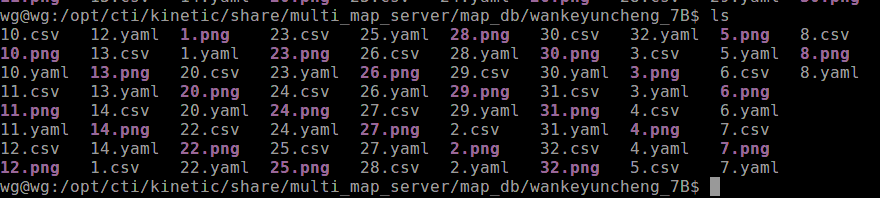
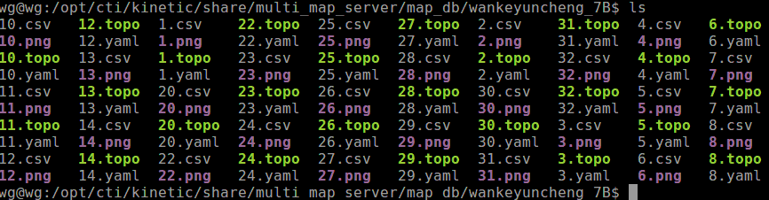
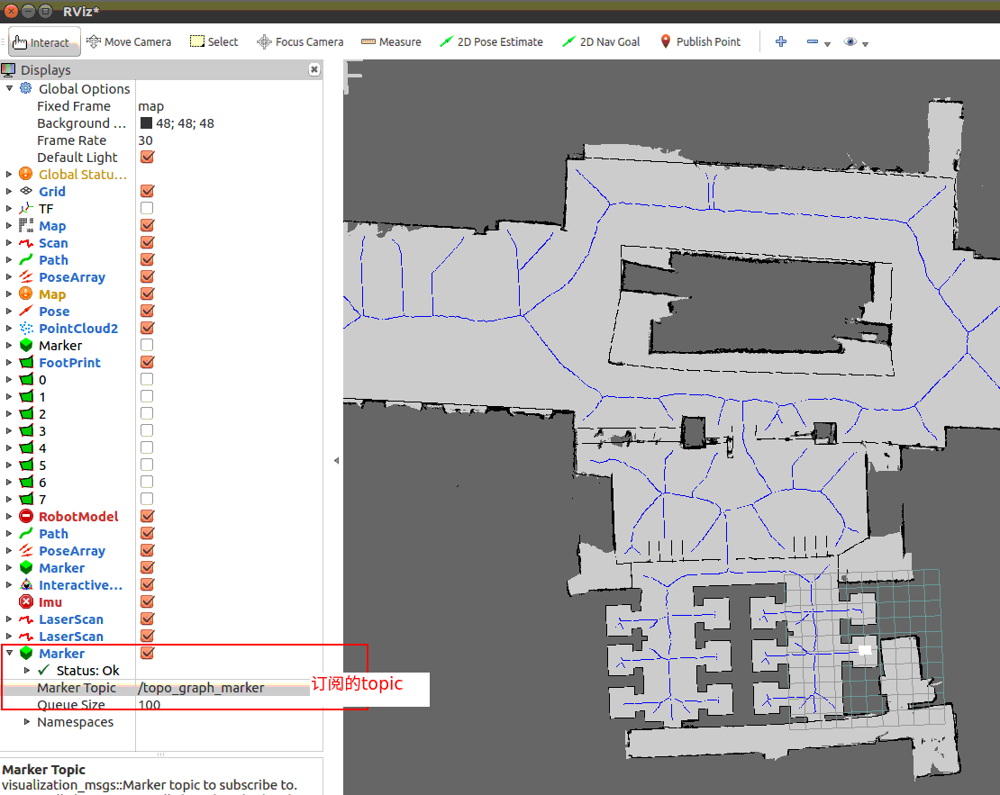
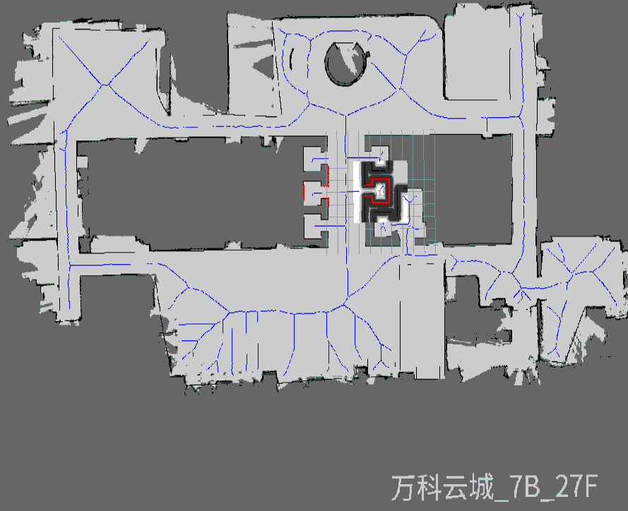
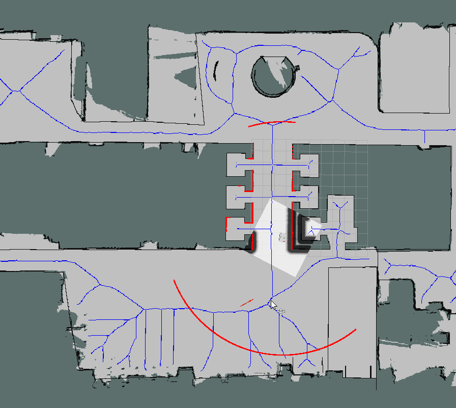

Introduction
关于topomap的最小依赖包备份
| 包名 | 描述 |
|---|---|
| topomap_tools | 生成topo工具包 |
| topo_planner | 给予topomap 规划包 |
| topo_publish | topomap 发布包 |
| wankeyuncheng_7B | 测试用例地图 |
编译
mkdir -p catkin_ws/src
cd catkin_ws/src
git clone https://gitlab.ctirobot.com/candle/planning/topomap
cd catkin_ws
catkin_ws
批量生成*.topo拓扑图文件
$ source topomap_tools 工作环境
# 进入到地图文件
$ cd wankeyuncheng_7B/
$ ls 如图1
# 执行指令批量批量生成*.topo 如图2
$ rosrun topomap_tools topomap_generator_node --all
- 图1

- 图2

可视化*.topo文件
$ source topomap_tools 工作环境
# 进入到地图文件
$ cd wankeyuncheng_7B/
# rosrun topomap_tools topomap_loader_node 楼层
$ rosrun topomap_tools topo_publisher_node 1 # 图3
图3

roslaunch 方式启动 topomap_loader_node
$ source topomap_tools 工作环境
# 进入到地图文件 可视化发布(roslaunch topo_publish graph_publisher.launch 只发布cti_msgs/Graph msgs 没有可视化)
$ roslaunch topomap_tools topo_publisher.launch
# rospotic 指令切换地图 图4 切换后
$ rostopic pub /active_map cti_msgs/ChangeMapCmd "building: 'wankeyuncheng_7B'
level: '27'"
图4

使用拓扑图作为move_base 全局规划
修改文件:
/comom/robot/br_navigation/param/BR204/move_base_params.yaml base_global_planner: "topo_graph_planner/TopoGraphPlanner"重启仿真 指点导航

topo_planner_server 服务
roslaunch topo_planner topo_graph_server.launch
rosnode info /topo_graph_server
--------------------------------------------------------------------------------
Node [/topo_graph_server]
Publications:
* /plan2 [nav_msgs/Path]
* /rosout [rosgraph_msgs/Log]
Subscriptions:
* /graph_map [unknown type]
* /navigation_map [unknown type]
* /zones [unknown type]
Services:
* /topo_graph_server/get_itst_plan
* /topo_graph_server/get_loggers
* /topo_graph_server/make_plan
* /topo_graph_server/set_logger_level
服务API
rosservice info /topo_graph_server/make_plan
Node: /topo_graph_server
URI: rosrpc://wg:40533
Type: nav_msgs/GetPlan
Args: start goal tolerance